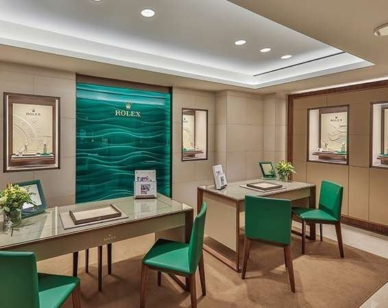
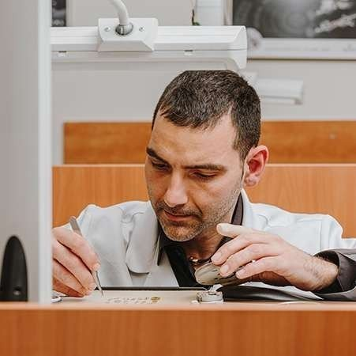

Distribuidor oficial Rolex
Barcelona
- Dirección
- Avinguda Diagonal, 538
08006 Barcelona - Horario
- Lunes a sábado, de 11:00 a 20:00 h
- Teléfono
- 935 193 303
Distribuidor oficial Rolex
Somos distribuidor oficial Rolex desde los años 80 y servicio técnico oficial en Barcelona y Lloret de Mar.


Una larga relación
En los años 80 conocimos a uno de nuestros grandes compañeros de viaje: Rolex. Nos convertimos en su distribuidor y servicio técnico oficial en Lloret de Mar. En 2011 llegamos a Barcelona, en plena Avenida Diagonal, como punto de venta oficial Rolex y servicio técnico oficial.
ⓘSección oficial de Rolex. Por las condiciones de distribuidor oficial, la colección y la información de Rolex se consultan en su espacio oficial dentro de joieriagrau.com, gestionado por la propia marca.
Boutiques Rolex
Distribuidor oficial Rolex

Distribuidor oficial Rolex

Servicio técnico oficial
Nuestros relojeros revisan y ponen a punto tu reloj en nuestro servicio técnico oficial. Pide cita en Barcelona o Lloret de Mar.
Asesoramiento personal
Pide cita y te atenderemos en nuestras boutiques de Barcelona o Lloret de Mar.